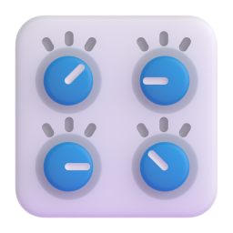
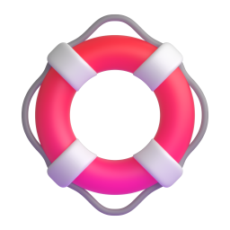
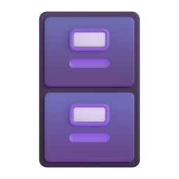
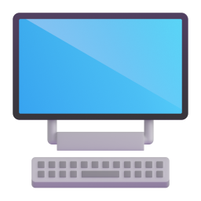
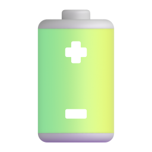
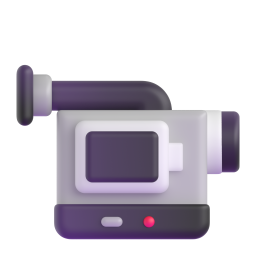
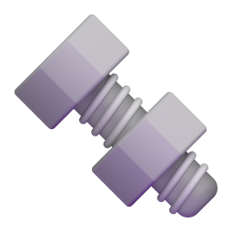
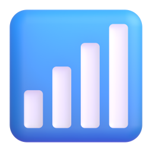
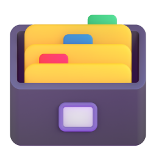

Everything We Do, In One Place.
Browse our full range of computer, laptop, networking, data and business IT services — click any service for details and pricing.
Computer Repairs
We love fixing computers – no matter the brand or type of machine you have. From desktops to all-in-ones, we’ll diagnose the problem and get you back up and running fast. See computer repair details →
Apple Mac Repairs
We love fixing apple products from Mac Book Air's to iMacs. Even if apple turn you away, give us a call as usually we can fix system boards as well, as opposed to you buying a new computer. The only thing we don't fix are iPhones and iPads. See our Mac repair service →
Laptop Repairs
Wether it's a smashed screen or you've spilt that evening wine all over your keyboard we can assist in finding the best way to get you up and running in no time along with our competitive prices for all your laptop hardware needs. See laptop repair details →
Computer and Network Security
Protect your financial records, photos, personal emails and other private data from identity thieves by letting us secure your computer for you. See our security services →
New Computer Setup
We'll come out to you and setup your new machine on-site, where you want it and how you want it. See new computer setup →

Computer Tune-up
Computer running slow? Let us give it a good tune-up and it'll be fatser than ever before. See computer tune-up details →
Data Backup & Transfer
Don't leave your personal data at risk of unrecoverable loss! Have us out to configure a backup of all your most important files. See data backup & transfer →

Data Recovery
We know there's no worse feeling than when you think you've lost your data. Give us a call – we're determined to help you recover it! See data recovery service →
Email Setup and Problems
It's hard to get by in this day and age without using email. We can come out to setup an email account for you and show you how to use it as well as fix any problems you have. See email setup & fixes →
General Troubleshooting
We can fix it all! Next time you can't get that pesky program to work or your device won't sync properly, let us worry about it. See troubleshooting service →
New Hardware Installs and Upgrades
Need a new piece of hardware installed? PC running slowly and think it might be time for an upgrade? We can help. See hardware upgrade options →
Hardware Repair & Diagnostics
Motherboard fried? We'll replace it. Faulty RAM slowing your PC down? We'll upgrade it. You can't scare the Geeks – they literally do it all! See hardware repair & diagnostics →
Insurance Reports
Water damage? Storm damage? We'll do a full diagnosis and write up a detailed and concise report for your insurer! Let us help make the claim process easier. See insurance report service →
Mobile Device Setup
Call us out to get all of your mobile gadgets setup and syncing with your computer! See mobile device setup →
Operating System Install & Repair
If your PC is experiencing serious performance issues, a damaged or currupted operating system may be to blame. We can help repair or reinstall it! See OS install & repair details →
Wireless Networks and Network Setups
Your local Geek can setup a secure wireless network in your home so that you can share anything and everything between as many computers as you like. See wireless network setup →
Setup New Equipment
Just bought a new printer? Need a webcam installed? We'll connect and configure almost any peripheral device to work with your particular computer. See equipment setup details →
Software Install & Setup
There are literally thousands of software programs on the market. We can help you install and setup almost all of them. See software install service →
Computer Training
Learn more about your technology and what it can do with out friendly one-on-one training that will ensure you get the most out of your technology investments! See computer training details →
Virus & Spyware Removal
Is your desktop running slowly? Are friends complaining about receiving emails from you which you never sent? Your computer may have "caught" a virus! We can check it out! See virus removal details →
New Computer Build
We can custom build you a brand new machine that is a fraction of the cost of what you will pay at retail stores and loads up in 15 seconds. See custom computer builds →
Search Engine Optimisation (SEO)
If you are a business owner that wants to be found on google, we can help. Let us help you soar through the ranks. See our SEO services →
Logos / Pamphlets / Business Card Design
Starting up a new business and want either a Logo or a business card done? Speak to us today and let us create one just for you! See logo & design services →
Redesigns / Updates to Websites
Already have a website but unhappy with parts of it. We can change or update your website with the latest content or changes you request. See website redesign service →

Web Hosting
We host our websites in Australia – not overseas. Any issues you speak to an Australian not overseas. 24×7 support. See web hosting details →
Domain / Custom Emails
Do you want your own domain name or a custom email address so you can appear more professional. We can help! See domain & email services →
NBN Setup and Installation
We can assist with transferring you over to the NBN as well as the best plans to choose from. Sometimes bigger companies such as Telstra, Optus, and Iprimus are not the best ones to choose! See NBN setup details →
Windows De-bloat and Customisation Service
Tired of windows cluttering your screen with apps you never asked for? We strip out the bloat, kill as many ads as we can and setup windows the way it should have been – we can even bring back the traditional start button and My computer. See Windows de-bloat service →
Software Sales and Solutions
We sell all software at a reduced rates where possible. Including Microsoft office 2010, 2013, 2016 as well as the latest windows 10 and everybody's favorite Windows 7 so that you don't have problems with those forced updates. See software sales & solutions →
Cloud Backup / Storage Solutions
Every hard drive will fail. It is just a matter of time. Let us direct you to the best cloud storage solutions for you so that you will never lose your precious documents, photos, or Data. See cloud backup solutions →
Google Workspace / Office 365 Business Solutions
If you're wanting solutions for the two above products let us know we can set you up and configure all your accounts and zone editor settings. See Workspace & 365 solutions →
Laptop & Computer Buying Service
If you don't want us to build you a computer and need a laptop as you want it to be portable we can offer a buying service for you or just give you general advice on the best laptop/specs based on your needs. See our buying service →
Server Support
Do you have a server that you are having problems with or is running slow or needs an upgrade? We can assist small businesses with getting their server up and running again in the quickest time to prevent business impact. See server support details →
Preventative Maintenance and General Computer Care
9 times out of 10 you can prevent something from happening to your computer by having regular checkups and maintenance. There are several things we can look for that can usually take an hour to ensure that you're not going to run into a catastrophe anytime soon! See preventative maintenance →
General Advice for All Your Tech Questions
Are you having trouble determining what phone you should buy or what tablet you should get? Do you need advice on what internet provider has the best plans available? We are happy to give non-biased advice for these types of questions you may have. See our tech advice service →
Help You Get Better Deals on Your ISP
Finally you have a friend in the business! In some cases we can actually call up your ISP and get a better price for you because we are aware of what other ISP companies are charging and can save you $$$ of your bill per month or a higher data rate. See ISP deal help details →
Get Started with Crypto Currency
While we are not a financial advisor a lot of people are wondering how they can buy and get started with bitcoin, etherum and other alt coins. We can assist with the technical know how to do this as well. Assisting with Entry into and out of fiat and sending to exchanges. See crypto starter service →

Laptop Screen Replacement
Laptop Screens are often the thing that fails first on a laptop – let us give you options to replace or repair your laptop screen if it's flickering or not as clear as it once was. See screen replacement details →

Laptop Battery Replacement
No matter what type of Laptop we have we can replace any Battery and give you two options of a genuine or quality non genuine option that will extend the life of your laptop. See battery replacement details →
Family Safety and Screen Time Solutions
Have a kid that you want to ensure is not looking at anything appropriate on the web, or want to limit their screen time on their Tablet, Ipad or Computer. We can assist setting up options to ensure that there are no fights regarding technology with asking your kids to get off. See family safety solutions →
Business IT Support and Services
Empower your business with our comprehensive Business IT Support and Services. From proactive network management to responsive help desk support, we ensure seamless IT operations, enabling you to focus on your core business while we take care of your technology needs. See business IT support →

Security Camera and Alarm Installation
Wireless Camera services don't offer proper protection and can be easily stolen or run out of batteries while your away. Install a hard wired system that lasts a life time with no ongoing fees. See CCTV packages & pricing →
Windows 11 Upgrade
Let us upgrade your old computer to Windows 11 – even if it says that it can't be done and you need a new computer, we have ways to install Windows 11 so you don't have to create more e-waste especially if your computer is still working. See Windows 11 upgrade details →
Learn About AI
AI is amazing and a technology that the world will be talking about for years to come. Want assistance with AI for your webpage, blogs or maybe you're curious and have no idea where to start? Let us teach you. See our AI training sessions →

Laptop Screen Hinge Repairs
Need laptop hinge repair on the Gold Coast? Get fast, affordable, and professional screen hinge repairs for all laptop brands. See hinge repair details →
AI Receptionist and Answering Services
Impress your customers with an AI taking your calls when your not available as if you have a business you see that most customers don't want to leave voice mails anymore. See AI receptionist details →
Console Repairs
Whether it's your XBOX, PS5 or Switch we can assist you getting your console repairs fixed with a short turn around so you can continue gaming. See console repair details →
Robot Vacuum Cleaner Repairs
When your robot dies and your floor is a mess as a result, get it back up and running with our Vacuum cleaner repairs. See robot vacuum repairs →
One Drive Removal
Microsoft pushes OneDrive hard. It installs without asking, syncs without warning, and quietly rewires your file structure in the background. If it's caused you grief, we'll remove it completely and set you up with an alternative that stays out of your way. See OneDrive removal service →
Plex / Media Server Setups and Configuration
We can setup and configure your Plex and other media servers for seamless streaming of movies, TV shows, and personal content across multiple devices. Handles installation, library organisation, and network optimisation to ensure a smooth and intuitive home entertainment experience. See Plex & media server setup →
Password Manager Setup and Training
Sick of loosing your passwords all the time and having to reset them. There are good password managers and also bad Password Managers. Let us install and configure the best Password manager on your computer and devices so you have 1 Password for everything. See password manager setup →
Accessibility & Assistive Tech Setup for Seniors / Low-Vision Users
We tailor technology to meet your unique accessibility needs, whether it's larger fonts, voice navigation, or hearing support. Enjoy using your computer, phone, or smart devices with confidence and ease. See assistive tech setup →
3D Printer Setup, Calibration
Maximize your 3D printer's performance with expert setup, precise calibration, and repair services. Get high-quality prints every time, with fewer failed jobs and less frustration. See 3D printer setup details →

Network Optimisation & Wi-Fi Mesh Design
Stop putting up with slow, patchy Wi-Fi—get a professionally designed mesh network that covers your entire home or office. We optimise speeds, reduce interference, and ensure reliable, secure connectivity everywhere. See mesh WiFi setup details →
Photo Organisation / VHS and Slide Restoration
Need a better way to manage your photos by year, face and location effortlessly to find for special occasions? Let us show you the best way to organise your photos and files. We restore VHS and 35mm and other slides to digitise them for protection. See photo & VHS restoration →

NAS / Home or Small Office File Server Setup (Synology/QNAP)
Securely store, share, and access files across your home or business with a powerful NAS setup. Ideal for backups, media, collaboration, and remote access—without relying on the cloud. See NAS & file server setup →
UPS & Power Protection Installation
Protect your equipment from power surges and outages with a reliable UPS setup. Ensure your computers, servers, and network devices stay running and avoid costly data loss or damage. See UPS & surge protection →
Smart TV and Streaming Services Setups
From Netflix to Plex, YouTube Disney and Stan – we'll get all your streaming services set up on your Smart TV or media box. Enjoy hassle-free entertainment with the apps you love—no buffering, no confusion. See Smart TV & streaming setup →
Facebook, Instagram, Google, Microsoft Account Recovery Services
If you've been locked out or had any of your online accounts whether it's Gmail, Facebook, Instagram or Microsoft. You need to act fast. We can attempt to get you back into your account due to knowing the processes involved however there is never a guarantee. We can also assist setting up 2FA on all your accounts to ensure that you are best protected. See account recovery service →
Starlink Installation
Professional Starlink dish mounting, cable routing, router setup and whole-home WiFi coverage. See Starlink installation details →